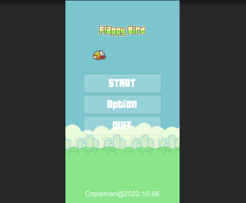
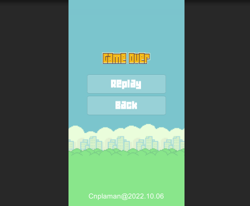

测试
2022-10-26
考核科目
程序开发综合实训
考核类型
考查
考核班级
20数媒B1、B2、B3、B4
考核时间
2022年10月26日B2班 周二[7-8]节
2022年10月27日B3班 周四[7-8]节
2022年10月28日B4班 周五[7-8]节
2022年10月28日B1班 周五[9-10]节
一、考核目的
1.基本操作：熟练操作Unity IDE
2.基本技能：UI布局、场景切换、音频使用
二、考核内容
利用文末附件提供的素材，参照样例，完成主场景封面制作和到其它场景的切换，背景音乐的播放；其它场景内容除了有一个返回按钮外，内容自定；

场景一

场景二
三、要求
1. 个人独立完成；
2. 发布为window平台应用；
3. 压缩打包后，按照学号+姓名的方式，如202010260000张树彬.rar，提交到
学习通
；
说明：
压缩包格式不限；未按要求提交，为无效作业，不得分；
四、评分标准
1. 60分以下：程序异常；功能不完善；
2. 60～75分（不含75分）：实现基本功能；
3. 75～85分（不含85分）：有创新；
4. 85分以上：布局恰当；颜色和谐；交互流畅；
五、附件
flappyBird.unitypackage资源包